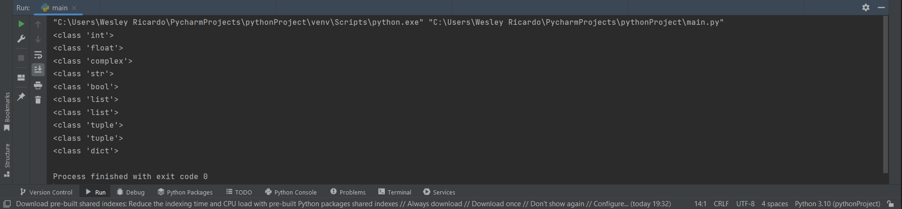

O que são variáveis em Python?
Variáveis em Python são lugares reservados na memória de um dispositivo para o armazenamento de dados que posteriormente vão ser usados na execução de uma solução digital.Essas variáveis podem ter formatos e tamanhos diferentes, entre outras particularidades.
Podemos pensar que a memória RAM de um dispositivo é como um grande armário, que comporta diversos itens no seu interior, e esse itens são as variáveis.
Quando você abre um armário, lá podem estar roupas, calçados, livros e objetos decorativos em geral.
Apesar de suas diferenças, todos esses itens podem ser armazenados em um único lugar e, na medida em que são retirados do seu espaço, fica uma lacuna que pode ser preenchida por outra variável ou pela mesma.
Tipos de variáveis Python
Assim como em um armário podem haver diferentes itens (variáveis), a linguagem Python também possui uma variedade importante de tipificação de dados.Confira alguns tipos:
Vejamos alguns exemplos para entendermos melhor:
inteiro = 12
print(type(inteiro))
flutuante = 12.4
print(type(flutuante))
complexo = 5+2J
print(type(complexo))
string = "Wesley"
print(type(string))
booleano = True
print(type(booleano))
lista = ['Wesley', 'Italo', 'Matheus', 'Michel']
lista2 = [1, 2, 4, 6.7]
print(type(lista))
print(type(lista2))
tuplas = ('Wesley', 'Italo', 'Matheus', 'Michel')
tuplas2 = (1, 2, 4, 6.7)
print(type(tuplas))
print(type(tuplas2))
dicionario = {'Wesley': 1.85, 'Leticia': 1.60, 'Morgana': 1.75}
print(type(dicionario))
Resultado

Como podemos ver acima o Python é uma linguagem pouco tipada, ou seja você não precisa declarar seu tipo para que o python entenda o tipo da variável, quando você declara a variável ele já entende qual é o tipo dela, por isso é uma linguagem de alto nível.
Embora o Python seja uma linguagem pouco tipada ele também possui algumas regras para a declaração de variáveis.
Regras para declarar as variáveis
- Para nomear a variável não devemos começar com números ou símbolos como 5 ou %, pot exemplo.
- Para declarar a variável ele deve começar com letras minúsculas
- As variáveis devem ser deparadas por underline (ex: nome_variavel)
- Fora a primeira letra tod o resto da variável pode usar caracteres especiais e números
- Não devemos últilizar palaras reservadas no Python como range, por exemplo
Conclusão
Essa foi uma breve introdução a variáveis, seus tipos e regras, no próximo tópico dessa sessão podemos ver mais detalhes sobre os tipos de variáveis, estude e teste cada vez mais esses tipos, eles ajudarão você a conseguir entender melhor, fique bem etecano e códifique sem modereção